Case study · Mobile
Trinity Pocket
A native B2B mobile app for apparel sales reps — designed and architected from scratch after a full audit of the existing third-party app it replaced. From codebase gap analysis to sprint-sequenced production build.
Before — Skiffle
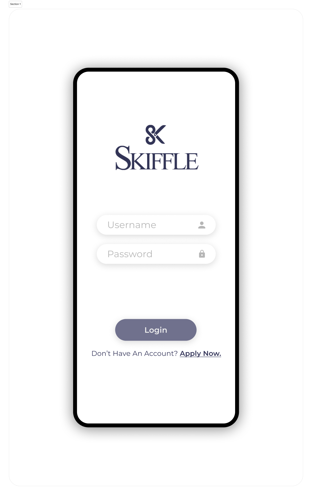
After — Trinity Pocket
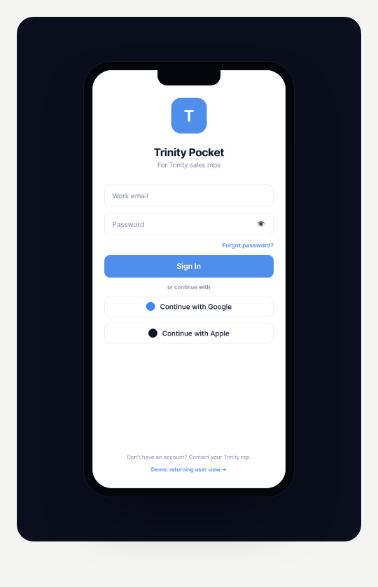
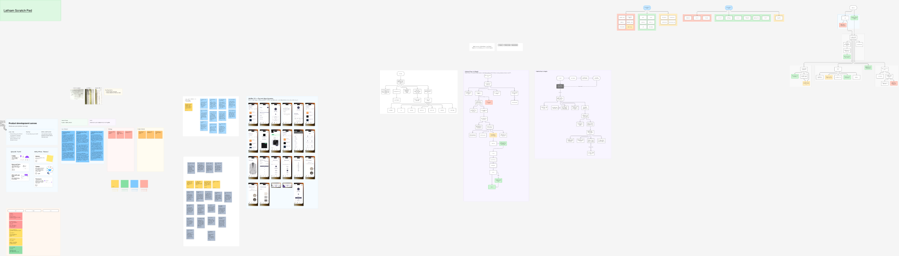
The kickoff FigJam board — personas, order hierarchy, screen flows, API gap analysis, and component library decisions, all in one canvas.
Background
Trinity Custom Apparel's field sales reps were using a third-party mobile app called Skiffle to manage clients, browse fabrics, and reference orders on the go. The app was not built by or for Trinity — it was a licensed product with a generic identity, limited feature coverage, and no path to native mobile capabilities like biometric login, push notifications, or camera access.
Trinity needed to own the mobile experience. My job was to define what that meant, scope what to build, and lead the design and architecture of the replacement from the ground up.
The audit — reading the existing app
Before wireframing anything, I did a full structural analysis of Skiffle: mapping every screen, its route in the codebase, and how it compared to Trinity's own dealer web app. The goal was to understand exactly what existed, what was missing, and what Trinity's own backend already supported that Skiffle never exposed.
I documented the gap analysis screen-by-screen: 22 screens in Trinity's dealer web app had no equivalent in Skiffle at all. Three Skiffle-only screens were mobile-native patterns worth carrying forward. Payment management, Styleflow, and the dashboard were entirely absent.
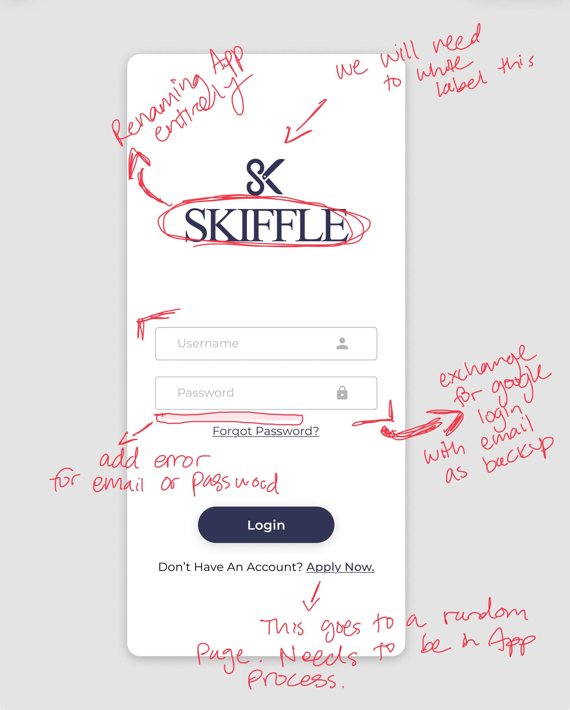
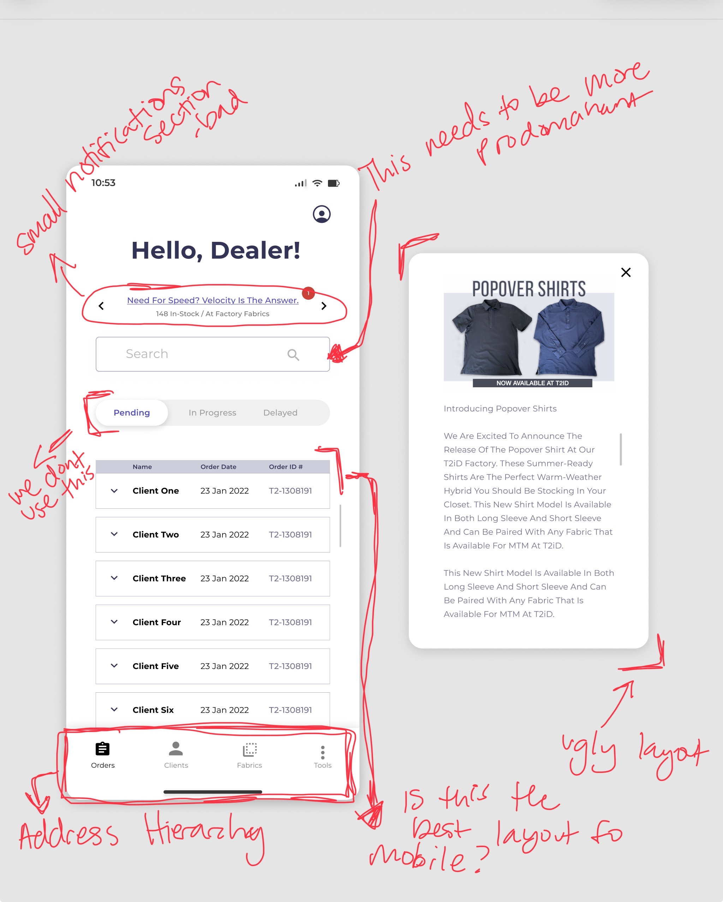

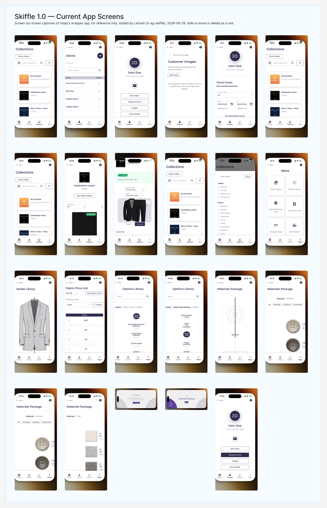
Skiffle 1.0 in full — every screen documented during the audit. Each was classified: carry forward natively, bridge via WebView, omit entirely, or replace with a better mobile pattern.
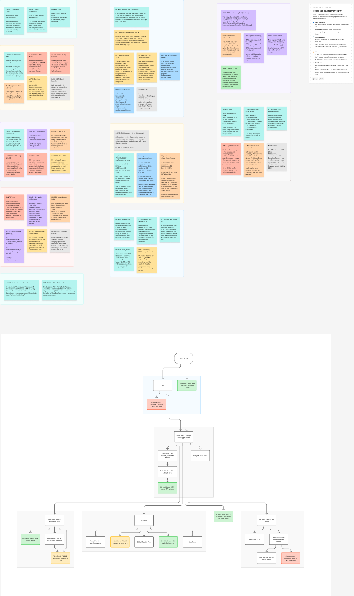
Kickoff board detail — screen specs, user stories, and flow decisions mapped during the initial planning session with the team.
Turning the audit into a scope
The audit produced a classification system for everything in Trinity's existing web app: features that should become native screens, features that could bridge through a WebView temporarily, features that should be permanently omitted from mobile, and net-new capabilities that only make sense on a phone.
Native builds
- Home dashboard with order pulse and bulletins
- Orders list and order detail
- Clients directory and client detail
- Fabric explorer and fabric detail
- Styleflow garment configurator
- Rankings screen
Permanent boundaries
- Order creation stays on desktop — not an MVP constraint, a product boundary
- Trend Reports omitted entirely
- Role-switching out of scope for v1
- Styleflow AI endpoint deferred to v2
Architecture Decision Record · ADR 0003
"Trinity Pocket is a field tool — dealers use it to manage relationships, present fabrics, and track orders. Order creation stays on desktop where dealers have the full configuration interface they need to get it right."
From scope to functional requirements
Every native screen carried its scope decision into a numbered functional requirement — FR-1 through FR-29, plus a parallel set of fix tickets (FIX-1, FIX-2…) for behaviors Skiffle got wrong. Grouping the board by screen area kept Auth, Home, Orders, Clients, Fabrics, Search, the inclinometer, Tools, Push, Support, and Account each auditable on their own, instead of one flat backlog.
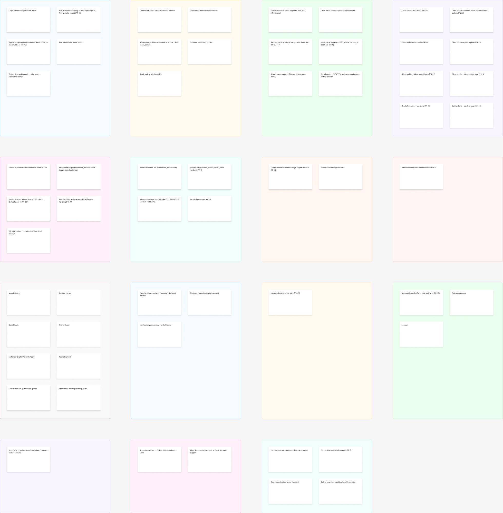
The full functional requirements grid — every screen area broken into individually numbered requirements and fix tickets, so each one could be scoped, estimated, and checked off independently during sprint planning.
Research & personas
Understanding who actually uses the app — and how their workflows differ — shaped every navigation and scope decision. Three distinct personas emerged: the field rep managing clients on-the-go, the senior dealer who lives in orders and rankings, and the relationship-led rep who uses Styleflow as a sales presentation tool.
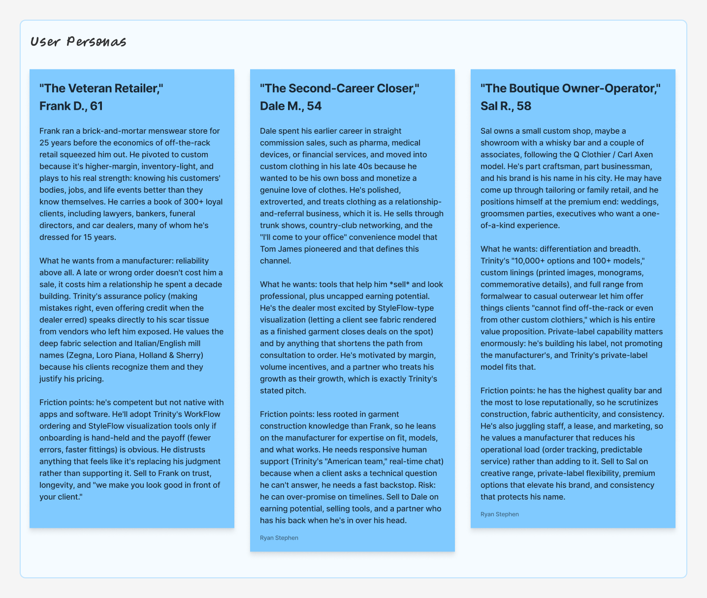
User personas defined during the kickoff session. Each persona surfaces different priority screens and informs where in the sprint sequence each feature belongs.
Key design decisions
01
Five-tab nav — no more, no less
Skiffle had a fragmented navigation model that didn't reflect how reps actually work. I mapped dealer workflows to five intent-based tabs: Home, Orders, Production, Clients, Settings — folding Fabrics, Styleflow, and the rest of the tools set into Production, and giving Account, payments, and preferences their own dedicated tab instead of hiding them behind an avatar.
02
Native-first auth with biometric path
Skiffle used a basic username/password form. Trinity Pocket implements Google and Apple SSO via native OAuth sheets, biometric login via Face ID on return visits, and a graceful password fallback — all without a WebView in sight. The login screen became the clearest signal that this is a different product entirely.
03
Styleflow — rack-based garment configurator
Styleflow was entirely absent from Skiffle. I designed a rack-based architecture: each garment (jacket, trouser, vest) is a configurable Rack with fabric, lining, buttons, and thread selections. Racks group into Stylepages. Picario XPO renders photorealistic previews server-side via Trinity's backend — the mobile app never constructs image URLs directly.
04
Sprint sequencing as a design decision
I sequenced five sprints in dependency order: Auth → Core read-only (12 screens) → Dashboard, Payments, Rankings → Styleflow → Rack Builder and push notifications. Each sprint produces a testable TestFlight build. Dealer access is gated until Sprint 3 payments direction is resolved — so dealers never see an alert they can't act on.
Backend scoping & sprint execution
Styleflow's Custom Model Creation flow needed backend work Trinity's API didn't have yet — new endpoints for custom copy, mounting, and model visibility, plus a "quick win" fallback using existing dealer upload storage until the real ones shipped. Mapping the frontend flow (Home → Model Library → "Create My Model" → Confirmation) against exactly which backend pieces existed vs. needed to be built kept the Rack Builder sprint from stalling on an API that wasn't ready.
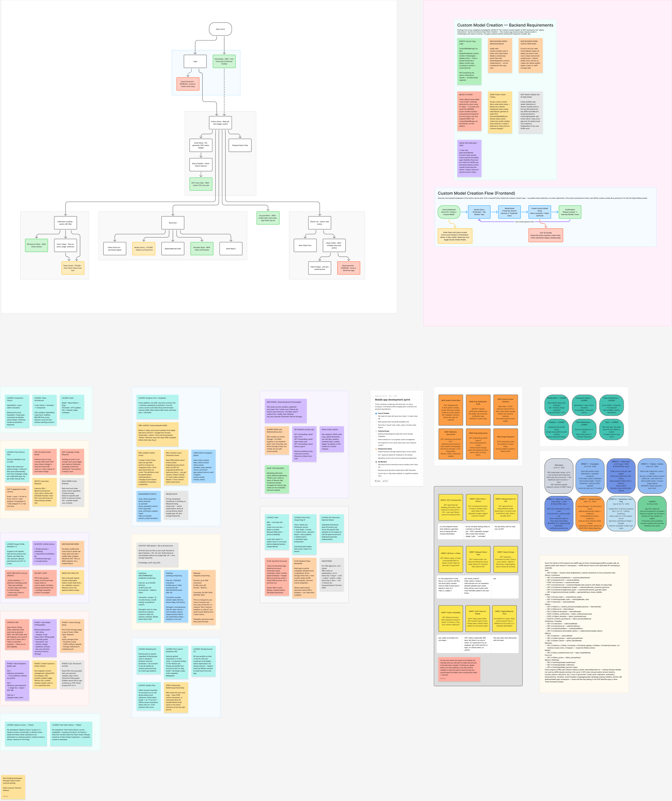
The planning surface behind the scenes: the full app screen-flow diagram, Custom Model Creation's backend requirements and frontend flow side by side, the API endpoint inventory, QA verification checklists for auth and orders, and the five-sprint execution timeline that sequenced all of it.
Design process
The kickoff board was a live working document — not a presentation deck. Every screen decision was made against real flow diagrams and real API availability, not against hypothetical requirements.
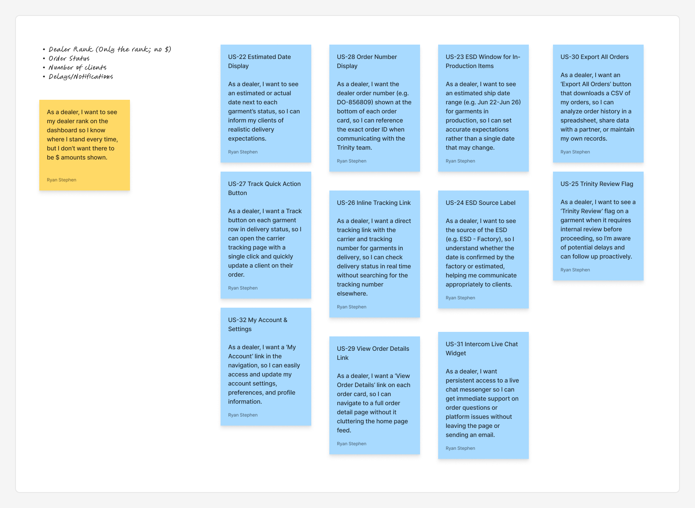
Dashboard concept — dealer rank pill, order pulse card, bulletin feed, and quick action row mapped before any wireframe was drawn.
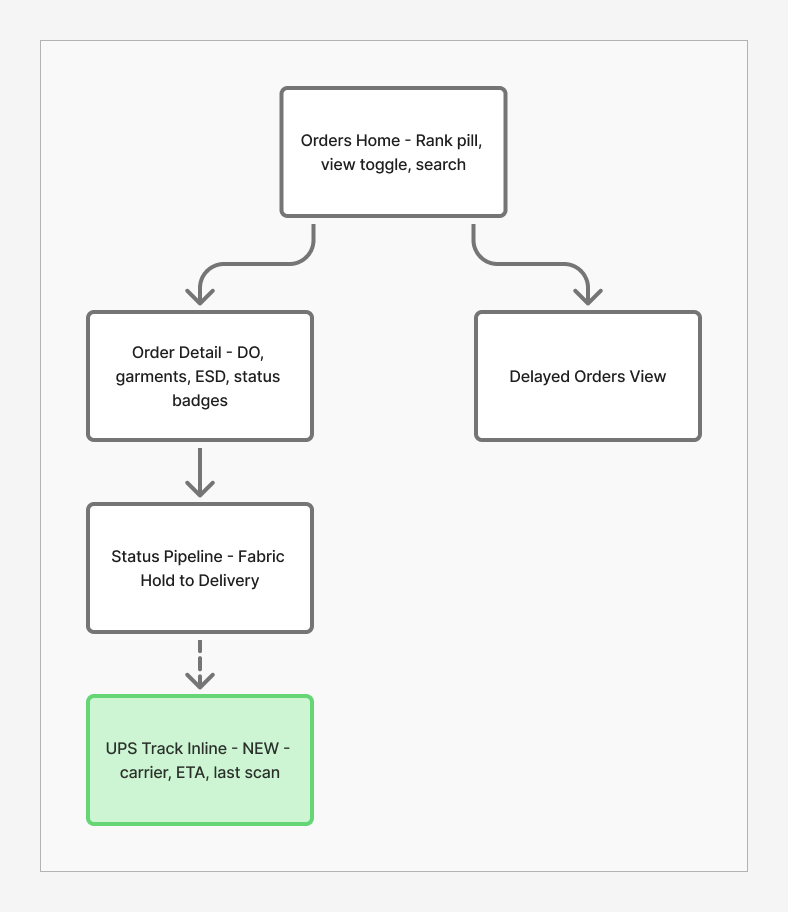
Orders tab spec — search bar, status pill tabs, and 56px minimum row height locked before the production UI was built.
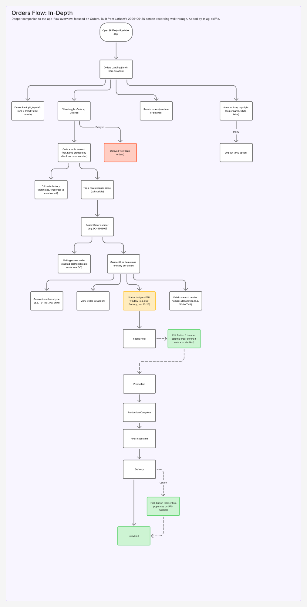
Orders flow in depth — mapped from a walkthrough session with the team. This diagram drove the screen hierarchy in the Orders tab and clarified which states needed native treatment vs. a desktop deep-link.
The interface
The production design uses violet #7C3AED as the locked brand color — a deliberate break from the navy-and-grey world of Skiffle. Every interactive state, active tab, and CTA uses violet. The tab bar never disappears during normal browsing. Styleflow uses navy filter chips to feel visually distinct from the rest of the app — a creative tool, not a reference screen.
"A field tool a sales rep is proud to open in front of a client."
Product brief — Trinity Pocket
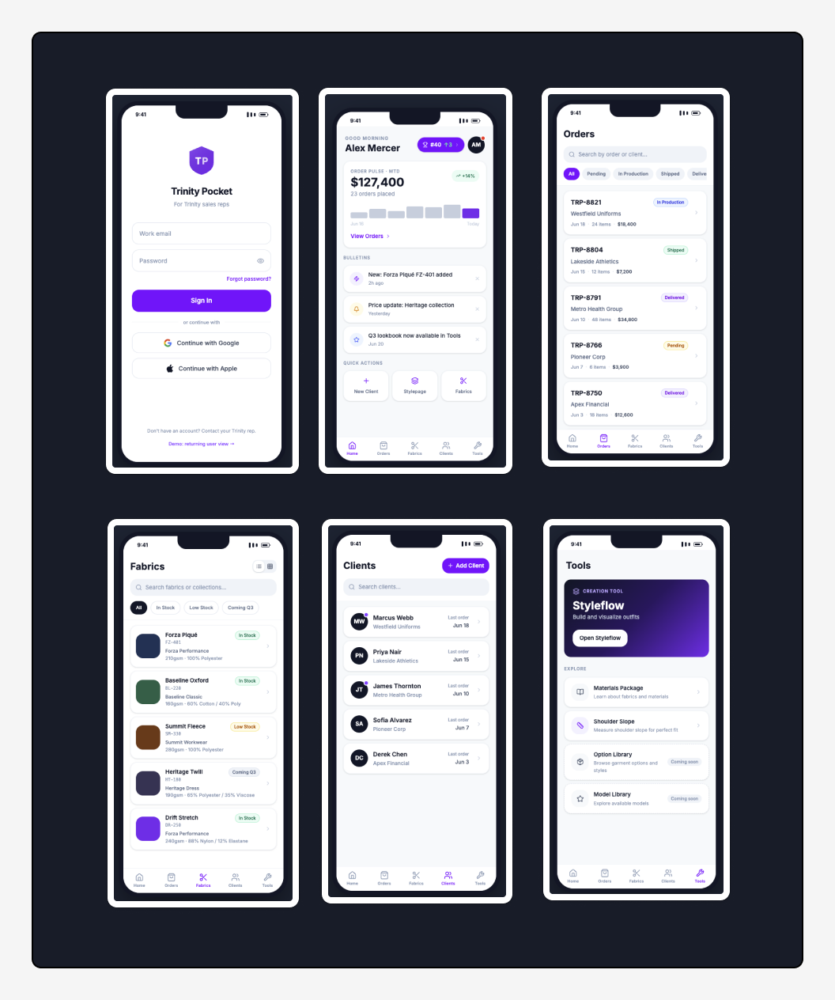
Six core screens from the production UI spec — Login, Dashboard with order pulse, Orders list with status tabs, Fabrics explorer, Clients directory, and the Tools hub with Styleflow as the featured creation tool.
The working build
Trinity Pocket now exists as a running Expo build, navigable end-to-end across all 27 screens against mocked data ahead of backend integration. A few screens from the current build:
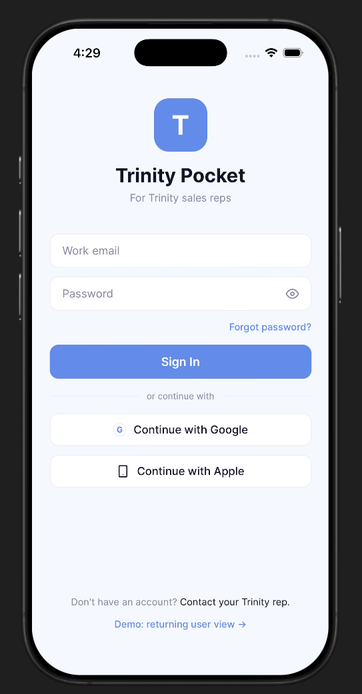
Login
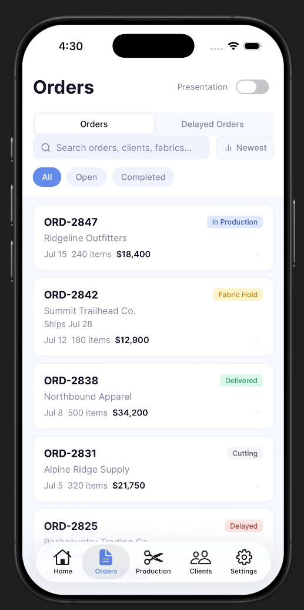
Orders
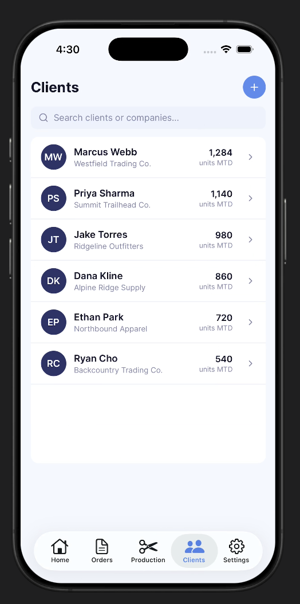
Clients
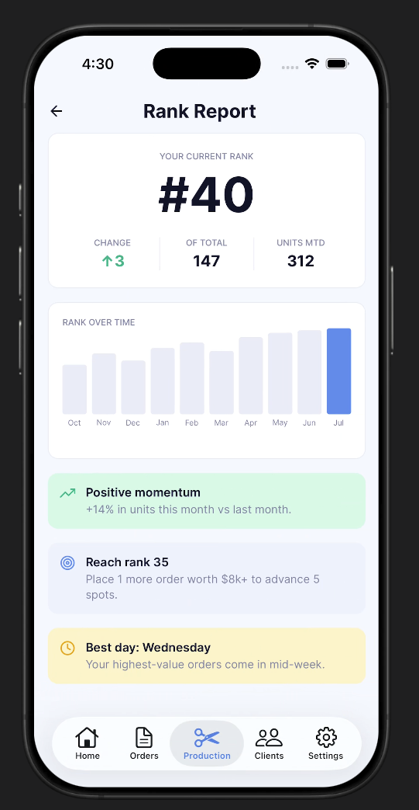
Rank Report
Outcomes
Trinity Pocket has moved from spec to a working build. All 27 screens are built and running end-to-end in Expo Router — Auth, Home, Orders with a 4-step New Order wizard, Clients, the AR-based Shoulder Slope measurement tool, Styleflow, Rankings, and Payments — currently against mocked data. The scope, tech stack, navigation architecture, and nine Architecture Decision Records are locked; the next milestone is wiring the build to Trinity's live backend in place of the mock data layer.
22
Screens identified as missing from the existing app through the gap analysis
9 ADRs
Architecture decisions locked before a line of production code was written
27
Screens built and running end-to-end in Expo Router, from Auth through Styleflow
Reflections
What worked
- Auditing the competitor app before designing anything surfaced gaps the team hadn't formally named
- Locking ADRs early prevented scope from being relitigated at every PR review
- Treating sprint sequencing as a UX decision — dealer access gates protect the experience
Next challenges
- Wiring all 27 built screens to Trinity's live backend in place of mocked data
- Native Braintree integration vs. WebView bridge — a Sprint 3 team decision
- Validating the Styleflow configurator flow with real dealer feedback once TestFlight ships